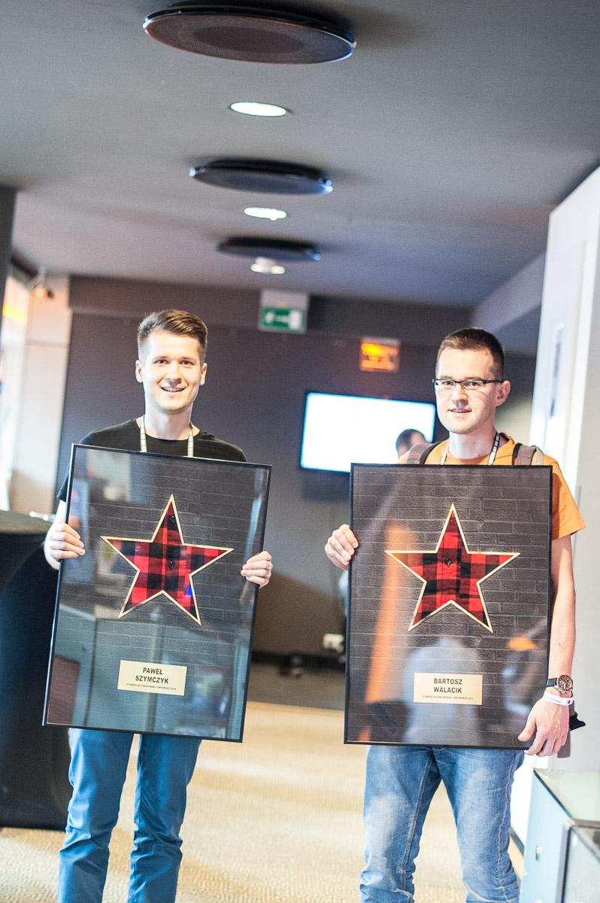

Paweł Szymczyk
Bartosz Walacik
javers.org
Javers Project
- Open source library
- Technology agnostic
- Based on reflection, JSON
https://github.com/javers/javerscompile 'org.javers:javers-core:0.7'javers.org
What Javers can do for you?
- Find diff between two graphs of objects
- Data audit
Show time!
Looking for early adopters
Looking for contributors
Javers needs you!
Profits for contributors
- Knowledge sharing
- Build your
Karma - No UI, no servers, no deployments
- We choose technology stack:
Spock, Groovy, Pico, Gson, MongoDB
Javers Team
How do we work?
- BDD
- Remote XP
- PR + Code review
Pair programming via hangouts
Code review
About project
- Src in Java 7
- Tests in Spock, Groovy
- 11 kloc src
- 8 klock test
- 420 BDD tests
- 87% coverage
Dziękujemy za uwagę!
Q & A ...
Contact us
| Paweł Szymczyk | javers.org | @p_szymczyk |
| Bartosz Walacik | javers.org | @BartoszWalacik |
http://github.com/javers/wjug-talk